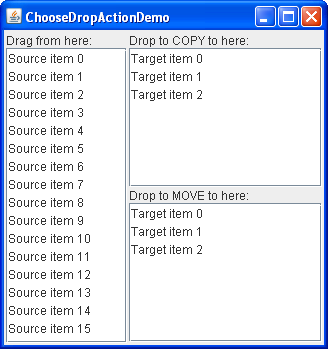

Lección: Arrastrar y Soltar y Transferencia de Datos
Sección: Eligiendo la Acción al Soltar
Demostración - ChooseDropAction
La demostración siguiente, ChooseDropActionDemo, contiene tres listas. Como puede ver en la
captura de pantalla, la lista a la izquierda, etiquetada "Drag from here", es el origen de arrastre.
Esta lista soporta tanto el movimiento como la copia pero no implementa la importación — así que no puede
realizar la acción de soltado en ella.
En el lado derecho hay dos listas que actuan como destinos de soltado. La lista de arriba, etiquetada "Drop to COPY here" permitirá sólo que los datos se copien en ella. La lista de abajo, etiquetada "Drop to MOVE here" permitirá sólo que los datos se muevan a ella. La lista de origen sólo permite que los datos sean arrastrados de ella.

Intente esto:
-
Pulse el botón Lanzar para ejecutar
ChooseDropActionDemousando Java™ Web Start ( descargar KDJ 7 o posterior). Alternativamente, para compilar y ejecutar el ejemplo por usted mismo, consulte el índice de ejemplo.
- Seleccione un elemento en la lista fuente y arrástrelo a la lista destino de arriba. Al arrastrar sobre el objetivo, observe que se muestra el cursor del ratón de copiar-y-soltar, incluso si no está presionando la tecla Control para indicar que desea una acción de copia. (Tenga en cuenta que el cursor de copia no aparece en la plataforma Macintosh, a menos que esté presionando la tecla Opción).
- Suelte el elemento. Este es insertado en la lista objetivo pero no es eliminado del origen — como se deseaba.
- Arrastre de nuevo desde la lista origen, pero esta vez en la lista de destino de abajo. Suelte el elemento. Es insertado en la lista destino y eliminado de la lista origen.
- Seleccione otro elemento en la lista fuente y, mientras presiona la tecla Control para indicar una preferencia para la acción COPY, arrastre el elemento a la lista destino de abajo.
-
Suelte el elemento en la lista. El elemento no es insertado — la acción de suelta es rechazada.
El método
canImportpara el manejador de transferencia fue codificado para rechazar la acción COPY, pero podría haber sido implementado para que devolviera verdadero, en cuyo caso la acción de usuario prevalecería y se produciría una copia.
Como puede suponer, el ejemplo
ChooseDropActionDemo.java contiene dos implementaciones de
TransferHandler:
/**
* FromTransferHandler permite arrastrar desde la lista y
* soporta las acciones de copiado y movimiento. Este manejador de transferencia
* no soporta la importación.
*/
class FromTransferHandler extends TransferHandler {
public int getSourceActions(JComponent comp) {
return COPY_OR_MOVE;
}
private int index = 0;
public Transferable createTransferable(JComponent comp) {
index = dragFrom.getSelectedIndex();
if (index < 0 || index >= from.getSize()) {
return null;
}
return new StringSelection((String)dragFrom.getSelectedValue());
}
public void exportDone(JComponent comp, Transferable trans, int action) {
if (action != MOVE) {
return;
}
from.removeElementAt(index);
}
}
/**
* ToTransferHandler tiene un constructor que especifica si la
* instancia soportará sólo la acción de copiado o la acción de movimiento.
* Este manejador de transferencia no soporta la exportación.
*/
class ToTransferHandler extends TransferHandler {
int action;
public ToTransferHandler(int action) {
this.action = action;
}
public boolean canImport(TransferHandler.TransferSupport support) {
// para la demostración, sólo soportaremos la acción de soltado (no el pegado desde el portapapeles)
if (!support.isDrop()) {
return false;
}
// sólo importamos Strings
if (!support.isDataFlavorSupported(DataFlavor.stringFlavor)) {
return false;
}
// comprobamos si las acciones de la fuente contienen la acción deseada -
// ya sea copiar o mover, dependiendo de lo que se especificó cuando
// se creó esta instancia
boolean actionSupported = (action & support.getSourceDropActions()) == action;
if (actionSupported) {
support.setDropAction(action);
return true;
}
// la acción deseada no es compatible, así que rechaze la transferencia
return false;
}
public boolean importData(TransferHandler.TransferSupport support) {
// si no podemos manejar la importación, dígalo
if (!canImport(support)) {
return false;
}
// busca la ubicación del soltado
JList.DropLocation dl = (JList.DropLocation)support.getDropLocation();
int index = dl.getIndex();
// obtener los datos y devolver falso si esto falla
String data;
try {
data = (String)support.getTransferable().getTransferData(DataFlavor.stringFlavor);
} catch (UnsupportedFlavorException e) {
return false;
} catch (java.io.IOException e) {
return false;
}
JList list = (JList)support.getComponent();
DefaultListModel model = (DefaultListModel)list.getModel();
model.insertElementAt(data, index);
Rectangle rect = list.getCellBounds(index, index);
list.scrollRectToVisible(rect);
list.setSelectedIndex(index);
list.requestFocusInWindow();
return true;
}
}
FromTransferHandler, adjuntado la lista fuente, permite arrastrar desde la lista y soporta las
acciones de copiado y movimiento. Si intenta soltar sobre esta lista, el soltado será rechazado porque
FromTransferHandler no tiene implementado los métodos canImport e
importData.
ToTransferHandler, adjuntado a ambas listas destino, la de sólo-mover y sólo-copiar,
contiene un constructor que especifica si la lista destino permitirá sólo el copiado o sólo el movimiento. Una
instancia que soporta la acción de copiado es adjuntada a la lista de sólo-copia y una instancia que soporta la
acción de movimiento es adjuntada a la lista de sólo-mover.
Podría también estar interesado en el ejemplo Soltado Nivel Superior la cual también ilustra la elección de la acción de soltado.
A continuación, vemos cómo se muestra la ubicación de soltado.